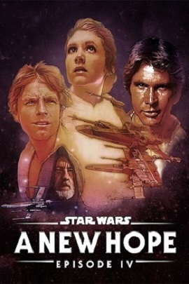

|
Star Wars Episode 4: Es ist ein zeitloser Klassiker, der die Zuschauer in eine weit, weit entfernte Galaxis entführt. Der Film beginnt mit dem epischen Kampf zwischen der tyrannischen Herrschaft des Galaktischen Imperiums und den mutigen Rebellen, die um Freiheit kämpfen. Die Rebellen haben es geschafft, die Pläne des Todessterns, einer mächtigen imperialen Waffe, zu stehlen, in der Hoffnung, sie zu zerstören und den Frieden in der Galaxis wiederherzustellen. Die Geschichte folgt dem jungen Luke Skywalker, einem Bauernjungen, der sich auf eine heldenhafte Reise begibt, nachdem er die Droiden R2-D2 und C-3PO trifft, die die geheimen Pläne tragen. Mit Hilfe des weisen Obi-Wan Kenobi, des schmuggelnden Han Solo und der furchtlosen Prinzessin Leia stellt sich Luke der dunklen Bedrohung durch Darth Vader, um das Schicksal der Galaxis zu entscheiden. Der Film ist berühmt für seine bahnbrechenden Spezialeffekte, die charismatischen Charaktere und die unvergessliche Musik von John Williams, die zusammen ein unvergleichliches Abenteuer schaffen, das Generationen von Fans begeistert hat. |
 |
||||
| Episode 4 - Die dunkle Bedrohung | |||||
| Produktions Infos | |||||
| Veröffentlichungsdatum | •25. Mai 1977 (Englisch) •10. Februar 1978 (Deutsch) |
||||
| Filmlänge | 120 Minuten | ||||
| Altersfreigabe: | FSK 12 | ||||
| Mitwirkende | |||||
| Regisseur | George Lucas | ||||
| Drehbuch | George Lucas | ||||
| Musik | John Williams | ||||
| Kamera | Gilbert Taylor | ||||
| Schnitt | Paul Hirsch; Marcia Lucas; Richard Chew | ||||